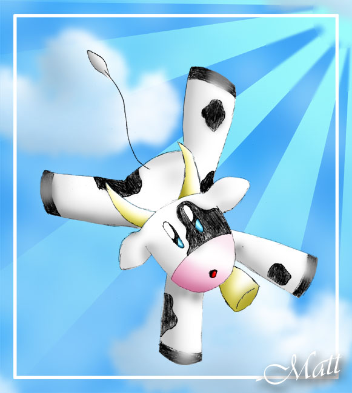

|
|
About Me

Name: Matt
Nicknames: Mu Kappa, ET, Ferret Boy, Alien
Age: Matt's age has been censored, for privacy reasons.
Gender: Male
Location: Somewhere
Appearence: Brown Eyes and Hair, glasses, 6 feet tall, 120 lbs.
Pets: I have a ferret named Hoover.
Fav. Pokémon: Togepi, Blissey, Furret, Togetic, Mew, Chansey
Music: I like Pop and Rock. Some bands and people: Reliant K, Michelle Branch,
Pink, Avril Lavagne, LifeHouse
Hobbys: I make this site and help other people out with there sites. I also draw
manga styled pics and color them on the computer (like the pic at right). And taking care of
Hoover takes a lot of time too!
Fav. Sites: I like mine, the UD, PokeSafari, and PokeCloud
Why the Tohjo Falls: The Tohjo Falls is that little cave linking Johto and Kanto
in Gold/Silver/Crytal. And yes it is the TOHJO falls, not joto falls. I just liked the naem
and if it was a real place I would be there all the time because it is so cool!
|
|
|
|